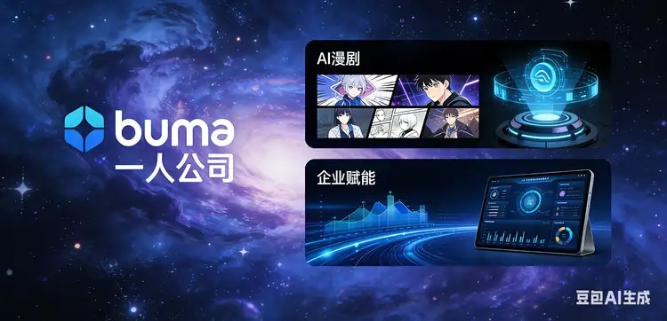

一人公司官网预约咨询 CTA 怎么写：别再写“立即了解”了，真正让人点下去的，是把第一次动作变轻
很多官网不是没有按钮，而是按钮把人吓走了。用户还没准备好“正式咨询”，你就让他点击“立即了解”“立刻合作”“马上预约”，第一次动作太重，点下去的人自然就少。
最近看 Linear、Notion、Loom、Cursor、Superhuman 这类首页，会发现一个很一致的变化：真正转化好的页面，越来越少把 CTA 写成空话，而是直接把“下一步是什么”写清楚。
Linear 把大方向钉在“for teams and agents”，后面每个模块 CTA 都对应一个具体动作；Loom 直接写“Record now”“Start sharing”；Superhuman 用“Get Superhuman”承接前面的量化收益；Cursor 用社会证明和结果感，把用户推向更自然的下一步。
对咨询型网站来说，CTA 最关键的不是更像广告，而是让用户觉得：这一步并不重，而且点下去以后会发生什么，我大概知道。
这也是很多一人公司官网最容易忽略的地方。首页写得很认真，案例也不算少，但主按钮还是停在“立即了解”“欢迎咨询”“联系我们”。这些词本身没有错，可问题是它们几乎没有传递任何具体动作。
访客看到这种按钮，心里会自动出现几个疑问：我要先准备什么？点进去会不会直接进入销售？是不是要填很长的表？我现在还只是想判断一下值不值得改，点这个会不会太早？
只要这些疑问没有被处理，按钮就算做得再亮，也不一定更容易被点。

这轮参考页里，值得一人公司抄走的 5 个点
这次我重点看的是几类不同风格的高质量页面，但它们在 CTA 上其实有很多共性。
- Linear：标题先把人群与结果说清，每个模块的 CTA 都像路线牌，不让用户自己猜下一步。
- Notion：不是先逼成交，而是先围绕任务结果组织信息，让 CTA 看起来像继续推进工作，而不是“进入销售流程”。
- Loom：大量使用动词型 CTA，比如 Record now、Start sharing、Connect over video，动作清楚、摩擦很低。
- Superhuman：先用“每周节省 4 小时”这种量化结果铺垫，再用单一 CTA 收口，用户更容易觉得值得点击。
- Cursor：先把结果和社会证明立住，再让 CTA 变得顺理成章，减少“我是不是还没准备好”的不确定感。
如果把这些页面的写法翻成一人公司官网语言，可以浓缩成一句话：先把结果讲明白，再把第一次动作做轻，再把回应预期说清楚。
为什么“立即了解”这类 CTA 越来越不够用了
因为它不回答用户最在意的 3 个问题：
- 点下去以后我要做什么？
- 这个动作重不重？
- 我会得到什么判断、回复或下一步？
尤其是一人公司网站，很多访客不是要立刻下单，而是想先判断：我该先改首页、先改联系页、先补内容承接，还是先修接入链路？如果 CTA 还停在“欢迎咨询”，用户就得自己在脑中补完整个流程。
而高转化页面的做法刚好相反。它们会主动替用户把这层心理成本拿掉。不是让用户先证明自己“值得咨询”，而是先告诉他：你只需要给我一个最小输入，我会先帮你做一轮判断。
| 常见写法 | 更适合一人公司官网的改法 | 差别在哪里 |
|---|---|---|
| 立即了解 | 先做 15 分钟适配判断 | 从模糊了解，改成具体动作与时长，点击预期更清晰。 |
| 联系我们 | 先发页面链接和最卡的 1 步 | 用户知道要带什么来，第一次动作更轻。 |
| 预约咨询 | 先判断该先改哪一页 | 把焦点从“咨询本身”转成“先得到判断”，更符合犹豫期用户心态。 |
咨询型官网最实用的，不是 10 个按钮，而是这 3 类 CTA
1）先判断型 CTA：适合高意图、但还不想被销售的人
这种写法最适合一人公司官网，因为很多来访者并不是没需求，而是不确定优先级。他现在不想听完整服务介绍，只想知道“该先做什么最值”。
示例：先做 15 分钟适配判断
适合场景：首页 Hero 主 CTA、解决方案页主 CTA、联系页主 CTA。
为什么有效：它先卖的是“判断”，不是“成交”，心理负担低很多。
2）先提交最小材料型 CTA：适合联系页与高犹豫入口
如果你的服务不是标准品，而是需要先看页面、流程、截图，CTA 最好直接把输入格式写进去。这样不是提高门槛，反而是在降低不确定感。
示例：先发页面链接 + 1 张截图
适合场景：联系页、FAQ 底部、文章页 CTA。
为什么有效：用户终于知道自己该发什么，不会卡在第一句话。
3）先自查型 CTA：适合还没准备直接聊的人
不是每个访客都处在“我现在就要咨询”的阶段，所以次 CTA 最好不要也是另一个重动作。更好的做法，是给他一个低压但仍然向前的入口，比如先看 FAQ、先看解决方案、先看相关文章。
示例：先看你最像哪一类问题
适合场景：首页次 CTA、联系页兜底区、文章页底部继续阅读。
为什么有效：保留继续推进的机会，但不把主转化动作打散。
写 CTA 时，最容易漏掉的其实不是按钮，而是按钮前后的承接
很多网站改按钮时，只改了 4 个字，没改上下文，所以效果还是一般。因为 CTA 本身只是收口，真正让人想点的是前后两层：
- 前面那句结果：你到底帮他完成什么；
- 后面那句预期：点下去之后会发生什么。
比如，如果你的按钮写“先做 15 分钟适配判断”，按钮前面最好已经把结果讲成“先判断该先改首页、联系页还是接入流程”，按钮后面再补一句“工作日 24 小时内给方向”。
这样 CTA 才不是孤零零一个按钮，而是一个完整承接：我知道为什么点、点完要干嘛、点完大概会得到什么。
一人公司官网 CTA，最稳的收口方式是“1 个主动作 + 1 个次动作”
这点在最近的高质量页面里也很明显。主 CTA 负责把高意图人群推进去，次 CTA 负责接住还在判断的人。真正糟糕的不是按钮太少，而是同一屏里放了 3 个看起来同等重要的动作：加微信、填表单、看案例、下载资料、预约咨询同时并列。
按钮一多，用户不是更有选择，而是更容易停住。
只保留 1 个真正想让用户现在做的动作，比如“先做 15 分钟适配判断”。
给还在犹豫的人一个低压继续入口，比如“先看解决方案”或“先看 FAQ”。
同一屏同时推 3 个主动作，通常只会稀释点击，而不是提高转化。
如果你现在就改，我最建议先改哪一个按钮
先改首页 Hero 主按钮。因为它离流量入口最近，改完最容易看到反馈。
如果你现在首页按钮还是“立即了解”，可以先试这类改法：
先做 15 分钟适配判断
如果你联系页按钮还是“提交咨询”，可以先试：
先发页面链接和最卡的 1 步
这类改法的关键不在于更花哨，而是更像用户真实会迈出的第一步。
先盯首页和联系页的自然访问是否稳定。对小站来说，月访问 100–500 也足够观察按钮改动前后的点击变化。
首页主 CTA 可以先看是否能做到 2%–4.5%；联系页主 CTA 或首发动作，可先看是否能比原先提升 20% 以上。
最终看从访问到有效首条消息 / 有效咨询的比例。对咨询型一人公司站，先把 0.5%–1.5% 做稳，通常比继续堆流量更值。
本方案风险：如果你只把 CTA 写得更轻，却没有同步讲清服务边界、输入要求和回应预期，按钮点击可能会上去，但无效咨询也可能增加；若出现这种情况，则调整为：继续保留低摩擦 CTA，同时在按钮附近补一句“适合谁 / 先发什么 / 多久回复”，把轻量开始和筛选边界一起写清。
最后一句：CTA 不是“催点击”，而是“替用户把第一步想好”
很多人以为 CTA 优化是文案技巧，实际上更像产品设计。你不是在逼用户赶紧点击，而是在帮他降低第一次行动成本。
对一人公司官网尤其如此。因为用户来找你，往往不是为了“看一个更会写按钮的网站”，而是因为他真的卡在某一步，需要一个更清楚、更低负担的开始方式。
所以别再问“按钮该不该更猛”，先问：用户现在最愿意迈出的第一步，到底是什么。
如果你怀疑自己官网不是没人看，而是按钮把第一次动作写重了
先对照看一遍：首页主 CTA 是不是太空，联系页第一次动作是不是太重，次 CTA 有没有把主动作打散。先改 1 个按钮，往往比再多堆 1 个模块更值。
先看联系页当前版本 →- 联系页当前版本：直接看第一次动作现在是怎么写的。
- 首页当前版本：先看 Hero 区主 CTA 与说明文是否接得上。
- CTA 文案优化指南：如果你想系统看 CTA 结构与模板，这篇更完整。
- 联系页首条消息优化：如果你卡在第一句话怎么发，这篇最相关。
- 首页文案怎么写：CTA 改之前，先把首屏结果讲清，会更容易一起起效。
CTA 一定不能写“联系我们”吗？
不是绝对不能，而是单独写“联系我们”通常太空。更稳的做法是补清楚动作和结果，比如“先发页面链接和最卡的 1 步”，让用户知道怎么开始。
首页主 CTA 和联系页 CTA 应该一样吗？
不一定。首页更适合“先判断型” CTA，联系页更适合“先提交最小材料型” CTA。前者负责把人推进来，后者负责把第一次动作写具体。
同一屏可以放两个 CTA 吗？
可以，但要有主次。一个主 CTA 推动现在开始，一个次 CTA 给还没准备好的人继续判断。不要把多个主动作放成并列竞争关系。